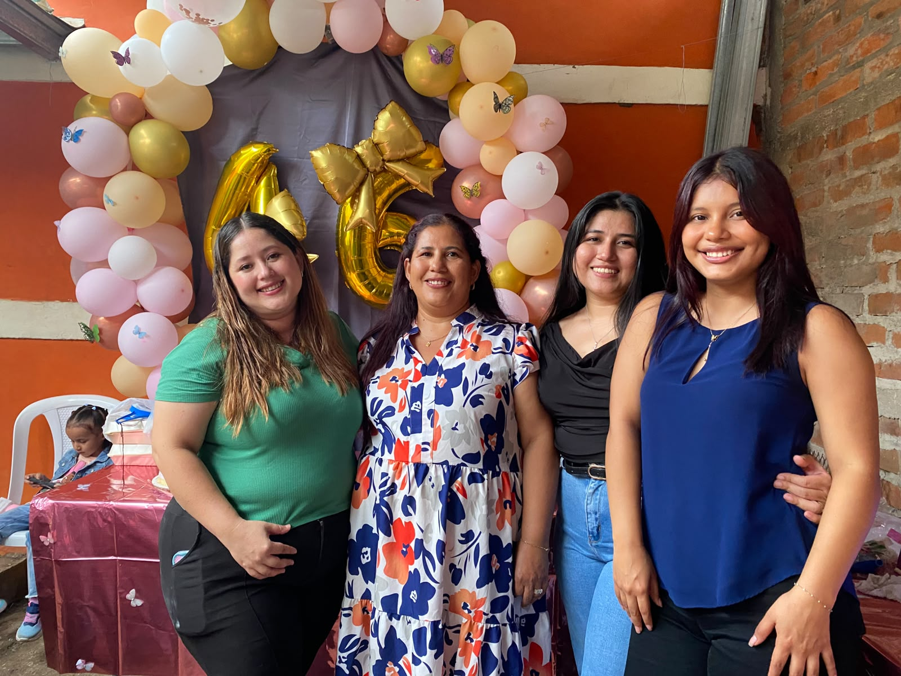
Mi mamá y mis hermanas
Ellas han sido parte de muchos de mis recuerdos y momentos importantes.
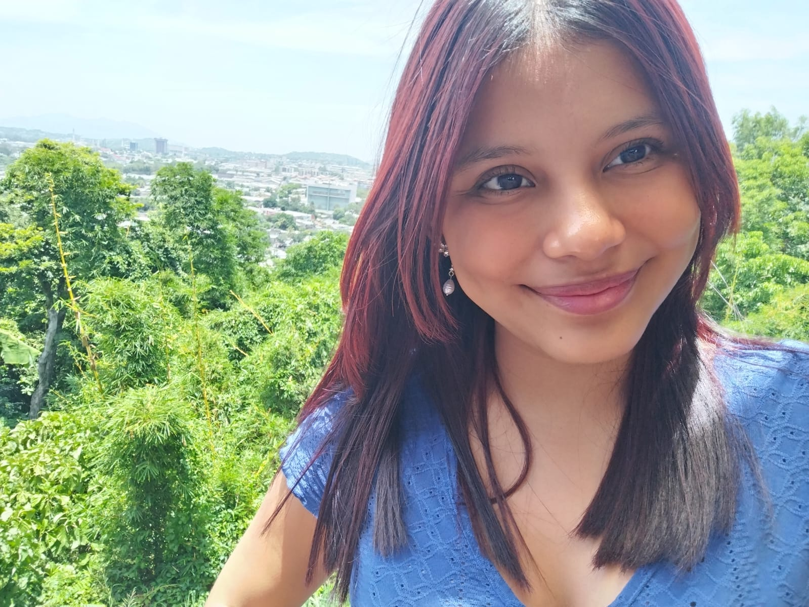
Pero todos me dicen Nati ♡
Soy una persona alegre, soñadora y con muchas ganas de aprender, crecer y construir un futuro del que pueda sentirme orgullosa.
Mi nombre completo es Natalia Jimena Díaz Beltrán, aunque me gusta mucho que me digan Nati. Nací el 31 de agosto de 2005 en Santa Ana, El Salvador, lugar donde también crecí junto a mi familia.
Soy una persona muy alegre y disfruto muchísimo pasar tiempo con las personas que quiero. Para mí, compartir con mi familia y mis amigos es una de las cosas más importantes.
Actualmente estudio mi segundo año de Ingeniería de Software y Negocios Digitales en la Escuela Superior de Economía y Negocios, ESEN.
Aunque algunas áreas relacionadas con los números y la lógica pueden costarme un poco más, siempre intento aprender y mejorar.
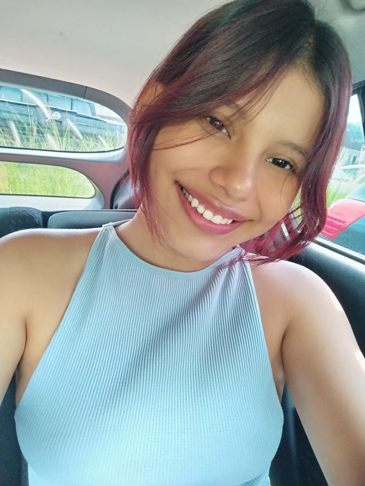
Mi familia es una parte muy importante de mi vida. Mis padres son María Beltrán y Ramón Díaz, y tengo dos hermanas mayores, Josselyn e Isamar Y mi tia abuelita con la que paso la mayor parte del timepo Tita. Gran parte de mis metas nacen del cariño y agradecimiento que siento hacia ellos.

Ellas han sido parte de muchos de mis recuerdos y momentos importantes.
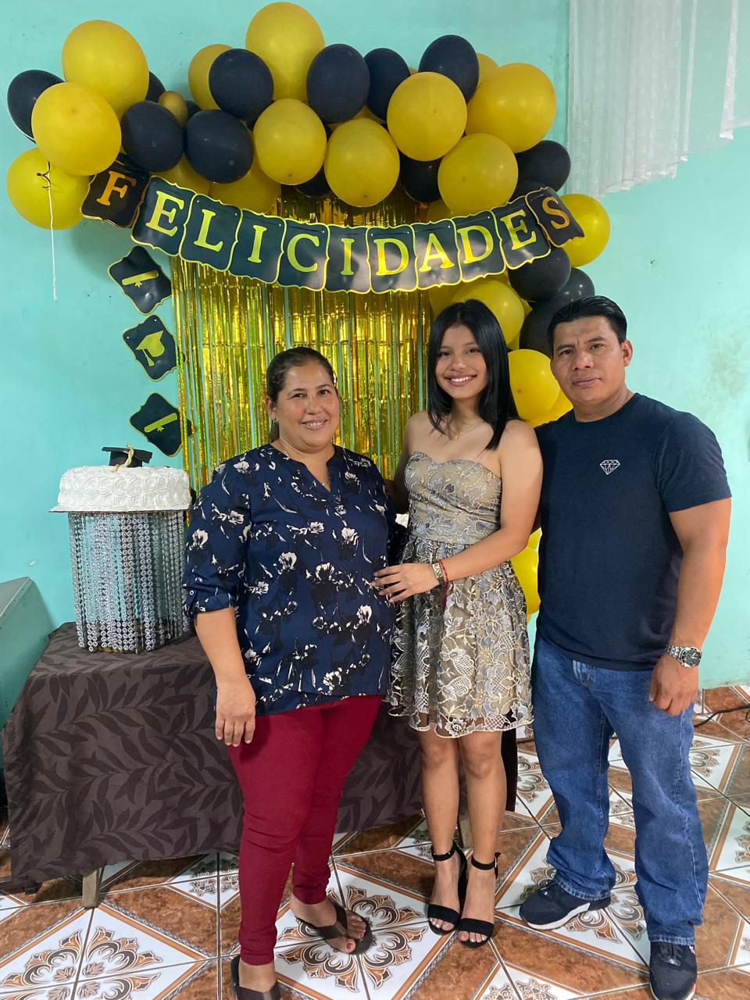
Mi mamá, María Beltrán, y mi papá, Ramón Díaz, son una gran motivación para mí.
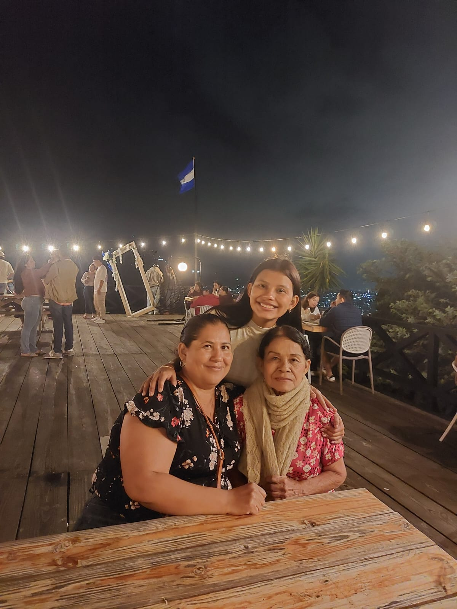
Mi familia siempre ha estado presente en diferentes etapas de mi vida.
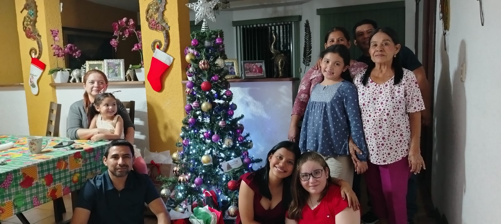
Me encanta compartir fechas especiales, celebraciones y momentos juntos.
Desde pequeña me encantaban las películas de Barbie. Podía verlas una y otra vez y también disfrutaba jugar con mis muñecas.
Actualmente veo mucho más anime y entre mis favoritos se encuentran NANA, Tokyo Ghoul, Hellsing, Gachiakuta y Shingeki no Kyojin.
Me gusta mucho leer, especialmente historias que combinan terror, amor y suspenso.
También disfruto jugar Roblox. Es una de las actividades que utilizo para distraerme, divertirme y pasar un buen rato.
El basketball es uno de los deportes que más me gusta y una de las actividades que disfruto ver y practicar.
Una de las cosas que más disfruto es compartir con mis amigos y con las personas especiales en mi vida. Muchos de mis mejores recuerdos son momentos sencillos que he vivido junto a ellos.
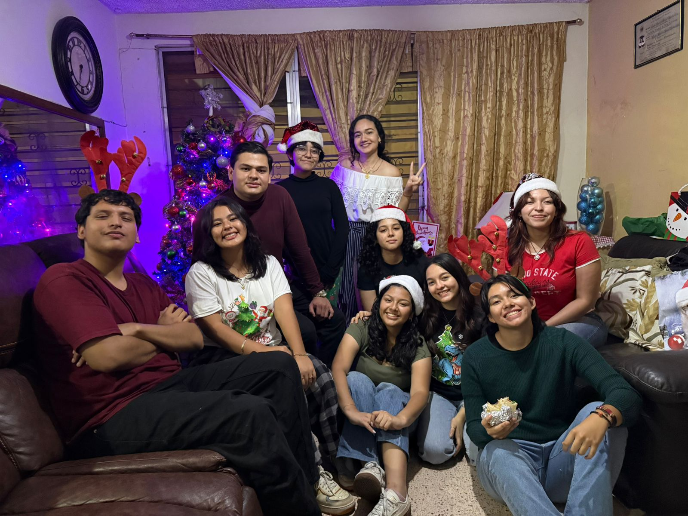
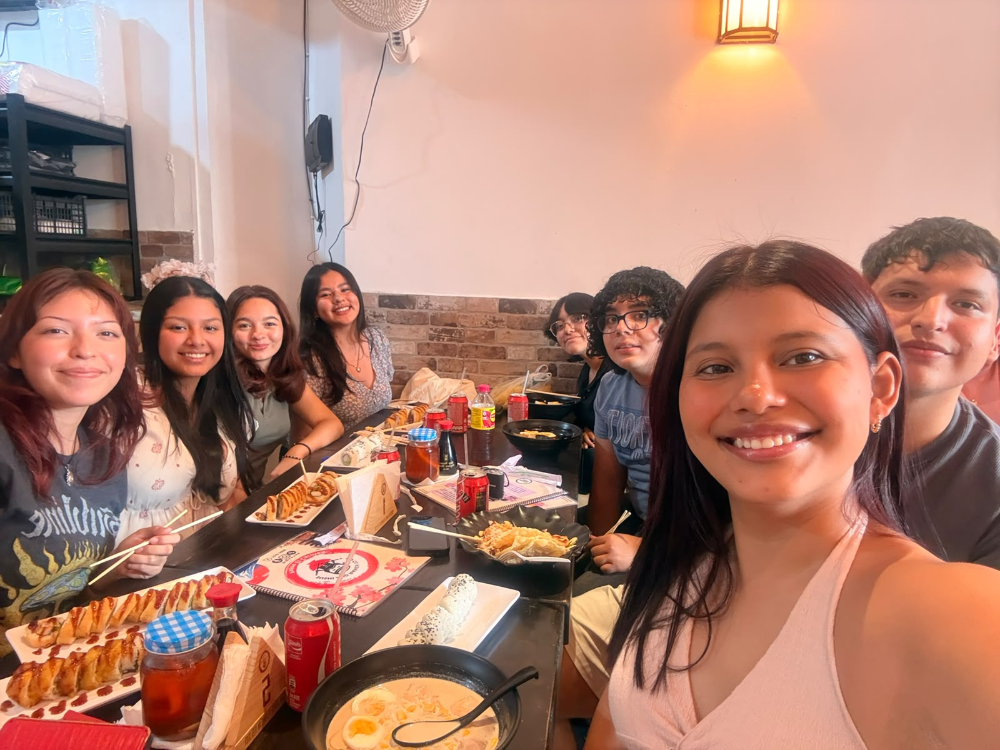
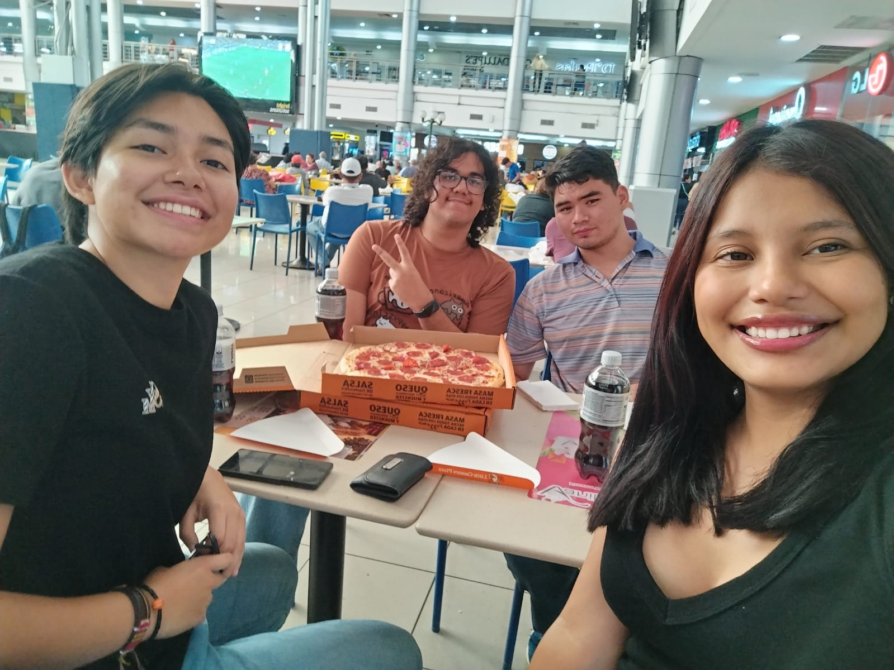
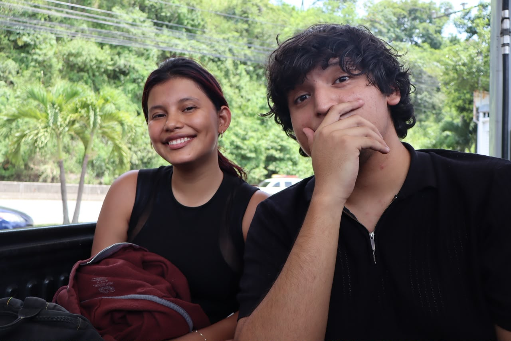
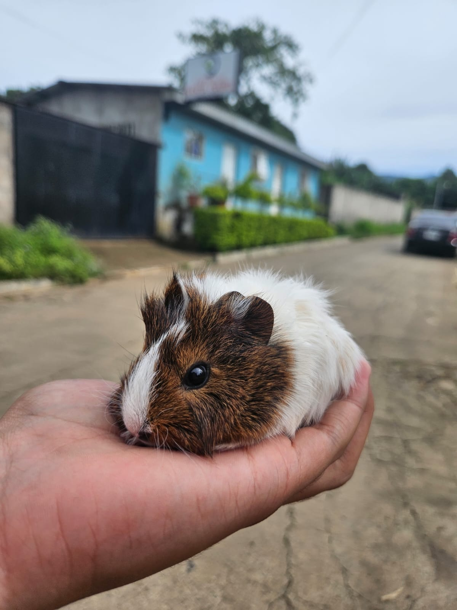
Una de las cosas que más me gusta hacer es jugar con mi cuy, Evie Pochita Durán Díaz. Es pequeña, adorable y se ha convertido en una parte muy especial de mi vida.
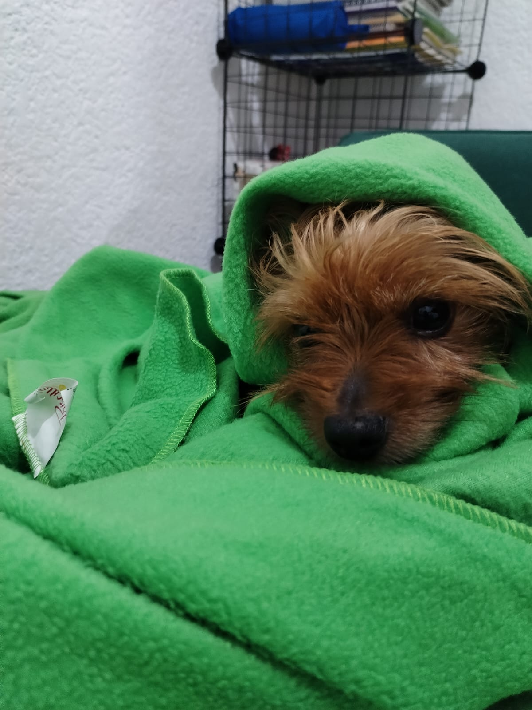
Nino también forma parte de mi familia y de muchos de los recuerdos que guardo con cariño.
Comencé mi educación en el kínder José María San Martín.
Posteriormente estudié en el Centro Escolar Católico Alberto Masferrer.
Durante diferentes etapas también participé en clases de natación en el Polideportivo, clases de baile y clases de inglés en ITCA.
Formé parte del programa ¡Supérate! Fundación Poma. Esta experiencia fue muy importante en mi formación y me permitió fortalecer mis conocimientos de inglés y acceder a nuevas oportunidades.
Actualmente curso mi segundo año de Ingeniería de Software y Negocios Digitales en la ESEN.
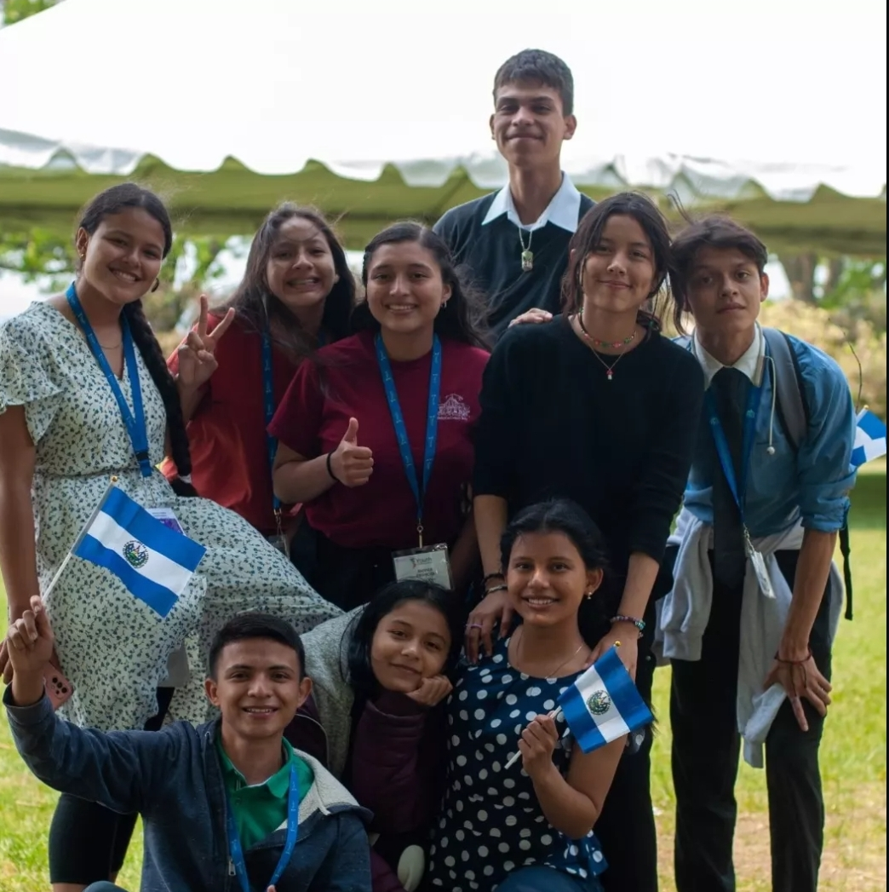
Gracias a las oportunidades que surgieron a partir de mi formación en ¡Supérate! Fundación Poma, pude realizar mi primer viaje a Estados Unidos mediante una beca del programa Youth Ambassador.
Esta experiencia me permitió conocer nuevas personas, desenvolverme en un ambiente diferente, conocer otra cultura y ampliar mi forma de ver el mundo.
Actualmente participo en diferentes asociaciones y proyectos universitarios como MUN ESEN, Edúcate y Carrera Pro Becas.
También disfruto participar en actividades de voluntariado y he colaborado con iniciativas como TECHO, Hábitat y Libertad Verde.
Todas estas experiencias me han ayudado a conocer personas, enfrentar nuevos retos y desarrollar habilidades que complementan mi formación académica.